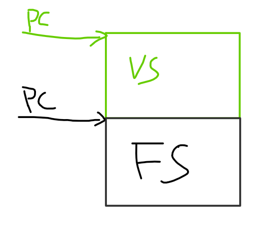
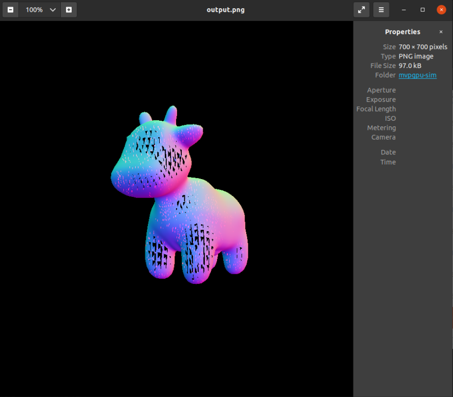

Graphic Support Approach
Application
Create Vertex shader unsigned int vertexShader = glCreateShader(GL_VERTEX_SHADER)
Create Fragment shader unsigned int fragmentShader = glCreateShader(GL_FRAGMENT_SHADER)
Fill vertices data glBufferData(GL_ARRAY_BUFFER, sizeof(vertices), vertices, GL_STATIC_DRAW);
while loop
glClearColor()
glUseProgram(shaderProgram) //Activate the shader
glDrawArrays(GL_TRIANGLES, 0, 3) //render the triangle
glfwSwapBuffers(window) //glfw: swap buffers and poll IO events (keys pressed/released, mouse moved etc.)
glfwPollEvents()
const char *frag_shader_source = "\n" \
" __kernel void normal_fragment_shader(__global float3* payload, \n" \
" __global float3* return_color, \n" \
" const unsigned int n) \n" \
" { \n" \
" int tid = get_global_id(0); \n" \
" if (tid < n) { \n" \
" float3 color = (float3)(payload[tid].x + 1.0f, payload[tid].y + 1.0f, payload[tid].z + 1.0f) / 2.f; \n" \
" return_color[tid] = (float3)(color.x * 255, color.y * 255, color.z * 255); \n" \
" } \n" \
" } \n" \
"\n";
int main(int argc, const char** argv)
{
float angle = 140.0;
bool command_line = false;
// [Loading model] Load .obj File
bool loadout = api_load_model("../models/spot/spot_triangulated_good.obj");
// [Texture]
std::string obj_path = "../models/spot/";
auto texture_path = "spot_texture.png";
Texture Text = Texture(obj_path + texture_path);
api_texture(Text);
Eigen::Vector3f eye_pos = {0,0,10};
//api_set_vertex_shader(vertex_shader);
api_set_fragment_shader("normal_fragment_shader", frag_shader_source);
int key = 0;
int frame_count = 0;
//while(key != 27)
{
api_set_model(get_model_matrix(angle));
api_set_view(get_view_matrix(eye_pos));
api_set_projection(get_projection_matrix(45.0, 1, 0.1, 50));
//r.draw(pos_id, ind_id, col_id, rst::Primitive::Triangle);
api_draw(rst::Primitive::Triangle);
key = cv::waitKey(10);
if (key == 'a' )
{
angle -= 0.1;
}
else if (key == 'd')
{
angle += 1;
}
}
return 0;
}
How to build application and shader
构建应用和构建kernel的逻辑跟OpenCL类似。单独构建shader为kernel，然后通过接口将shader的kernel加载进可编程部分。接下来Rasterizer程序通过api来启动GPU工作，shader工作时，由固定管线部分的rast模块进行启动shader kernel。待shader kernel完成其工作后将结果返回给rast模块。
Application building
cmake_minimum_required(VERSION 3.10) SET(CMAKE_C_COMPILER "/usr/bin/gcc-9") SET(CMAKE_CXX_COMPILER "/usr/bin/g++-9") project(Rasterizer) find_package(OpenCV REQUIRED) #find_package(Graphic REQUIRED) set(CMAKE_CXX_STANDARD 17) set(CMAKE_CXX_FLAGS "-g") set(CMAKE_CXX_FLAGS_DEBUG "-O0" ) set(CMAKE_CXX_FLAGS_RELEASE "-O2 -DNDEBUG " ) include_directories(/usr/local/include/opencv4 $ENV{GPGPUSIM_ROOT}/gpu/graphics/include $ENV{GPGPUSIM_ROOT}/gpu/graphics/texture) link_directories($ENV{GPGPUSIM_ROOT}/lib) add_executable(Rasterizer main.cpp) target_link_libraries(Rasterizer PRIVATE Graphic ${OpenCV_LIBRARIES})
Shader building
Now reuse opencl
在OpenGL中会将VS和FS连接为一个program，因此在实现中可以通过Shader type来决定PC的起始位置，让可编程部分运行对应的Shader。

Refer to Shader examples
Vertex shader
#version 330 core
layout (location = 0) in vec3 aPos; // the position variable has attribute position 0
out vec4 vertexColor; // specify a color output to the fragment shader
void main()
{
gl_Position = vec4(aPos, 1.0); // see how we directly give a vec3 to vec4's constructor
vertexColor = vec4(0.5, 0.0, 0.0, 1.0); // set the output variable to a dark-red color
}
Fragment shader
#version 330 core
out vec4 FragColor;
in vec4 vertexColor; // 从顶点着色器传来的输入变量（名称相同、类型相同）
void main()
{
FragColor = vertexColor;
}
GPU
当前GPU中是先VS后PA，CModel中是先PA后VS，没有本质上的差异。因此，这里可先做PA后VS，后续遵循硬件设计进行调整
graph LR
A0[Load Vertice] --> A1[PA] --> B1[VS] --> A2[RAST] --> A3[FS] --> B2[ROP]
每一帧有多个Draw，每个Draw有多个图元(三角形，线，点)
RAST 光栅化以图元(三角形)为单位进行，一次光栅化一个三角形，每个三角形光栅化按title(4x8)输出到local memory中(varing slot)，Rast会告诉SP有多少个点，每个SP运行32个线程并发处理32(4x8)个像素
FS FS会从local memory拿到所需的参数，包括坐标等信息
MVP-Graphics API
bool api_load_model(std::string Path)
void api_texture(Texture t)
void api_set_vertex_shader(const char *shader_name, const char *shader_source)
void api_set_fragment_shader(const char *shader_name, const char *shader_source)
void api_set_model(const Eigen::Matrix4f& m)
void api_set_view(const Eigen::Matrix4f& v)
void api_set_projection(const Eigen::Matrix4f& p)
void api_draw(rst::rasterizer &rast, std::vector<Triangle*> &Triangle_List)
Loading model
Load .obj file，将模型文件转换为顶点数组
bool api_load_model(std::string Path)
{
bool loaded = Loader.LoadFile(Path.c_str());
return loaded;
}
PA
将顶点装配为三角形
void primitive_assemble(std::vector<Triangle*> &Triangle_List)
{
for(auto mesh:Loader.LoadedMeshes)
{
for(int i=0;i<mesh.Vertices.size();i+=3)
{
Triangle* t = new Triangle();
for(int j=0;j<3;j++)
{
t->setVertex(j,Vector4f(mesh.Vertices[i+j].Position.X,mesh.Vertices[i+j].Position.Y,mesh.Vertices[i+j].Position.Z,1.0));
t->setNormal(j,Vector3f(mesh.Vertices[i+j].Normal.X,mesh.Vertices[i+j].Normal.Y,mesh.Vertices[i+j].Normal.Z));
t->setTexCoord(j,Vector2f(mesh.Vertices[i+j].TextureCoordinate.X, mesh.Vertices[i+j].TextureCoordinate.Y));
}
Triangle_List.push_back(t);
}
}
}
VS
Vertex Shader对顶点进行MVP变化
r.set_model(get_model_matrix(angle));
r.set_view(get_view_matrix(eye_pos));
r.set_projection(get_projection_matrix(45.0, 1, 0.1, 50));
r.set_vertex_shader(vertex_shader);
Rasterizer
rst::rasterizer r(700, 700);
void rst::rasterizer::rasterize_triangle(const Triangle& t, const std::array<Eigen::Vector3f, 3>& view_pos)
Texture
std::string obj_path = "../models/spot/";
auto texture_path = "hmap.jpg";
Texture t = Texture(obj_path + texture_path);
void api_texture(Texture t)
{
//Texture
RAST.set_texture(t);
}
FS
Now MVPGPU-SIM don’t support OpenGL kernel compiling，so using OpenCL kernel to implement Fragment Shader
const char *frag_shader_source = "\n" \
" __kernel void normal_fragment_shader(__global float3* payload, \n" \
" __global float3* return_color, \n" \
" const unsigned int n) \n" \
" { \n" \
" int tid = get_global_id(0); \n" \
" if (tid < n) { \n" \
" float3 color = (float3)(payload[tid].x + 1.0f, payload[tid].y + 1.0f, payload[tid].z + 1.0f) / 2.f; \n" \
" return_color[tid] = (float3)(color.x * 255, color.y * 255, color.z * 255); \n" \
" } \n" \
" } \n" \
"\n";
api_set_fragment_shader("normal_fragment_shader", frag_shader_source);
ROP
void render_output(rst::rasterizer &rast)
{
cv::Mat image(700, 700, CV_32FC3, r.frame_buffer().data());
image.convertTo(image, CV_8UC3, 1.0f);
cv::cvtColor(image, image, cv::COLOR_RGB2BGR);
cv::imshow("image", image);
cv::imwrite(filename, image);
}
Output
# OBJ File Generated by Meshlab
# Object spot_triangulated_good.obj
# Vertices: 3225
# Faces: 5856
Actual result 
{kind=link}
{kind=link}
Questions
Is able to run VS and FS at the same time? Right now, MVP don’t support it.
Putting all data in DDR Vertice data and color/depth/frame buffer